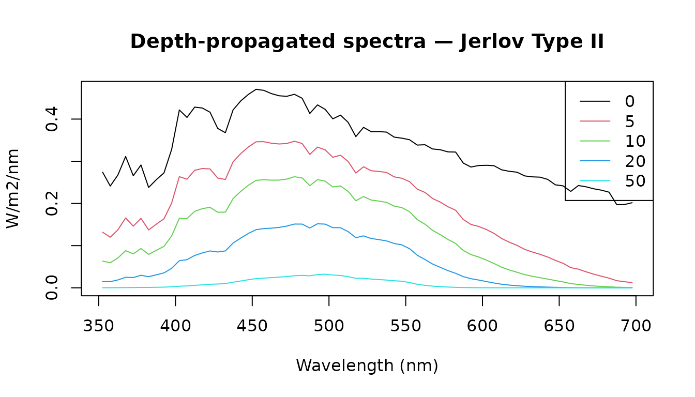

A researcher has deployed irradiance sensors at three depths on a coastal reef and wants to quantify how the light field changes with depth — both from direct measurements and extended to greater depths using a standard optical water-type model.
Loading field data
The Naples dataset ships with luxR: spectrally resolved
photon-flux irradiance measured at 0, 5, and 10 m depth at a coastal
Mediterranean site. from_naples() wraps it in a
lux_spectrum object that carries the wavelengths, unit, and
metadata.
library(luxR)
x0m <- from_naples("0m")
x5m <- from_naples("5m")
x10m <- from_naples("10m")
x0m## <lux_spectrum> irradiance [umol/m2/s/nm] | 352.5-862.5 nm, 5 nm bins (103 pts)
## depth: 0m
## source: Naples
## reference_depth_m: 0
## reference_medium: water
## provenance: Naples
## provenance: naples-mare-chiaro-legacy
## provenance: naplesBokKirwan2021
## provenance: unpublished-author-provided-data
## provenance: not-applicable
## provenance: 2021-12-31
## provenance: legacy bundled snapshot; redistribution terms not documented
## provenance: legacy canonical snapshot extracted from luxR commit 2375244
## provenance: data-raw/naples_legacy_snapshot.csv
## provenance: 5952acfab4a04ea1b02eb085e6a768d5
## provenance: wv=nm;depth_0m|depth_5m|depth_10m=umol/m2/s/nm
## provenance: c(352.5, 862.5)
## provenance: 5
## provenance: parse canonical processed snapshot; validate schema grid and non-negative irradiance
## provenance: naples-legacy-v1
## provenance: list(reference_depth_m = c(0, 5, 10), reference_medium = "water")
## import: bundled/reference source
## import: legacy canonical snapshot extracted from luxR commit 2375244
## import: data-raw/naples_legacy_snapshot.csv
## import: 5952acfab4a04ea1b02eb085e6a768d5
## import: naples-legacy-v1
## import: 0.1.1
## import: 75ae5c201a47cf658f3ea43bb9ef75689be01158
## import: parse canonical processed snapshot; validate schema grid and non-negative irradiance
plot(x0m, main = "Surface irradiance — Naples coastal site")The spectrum peaks in the blue-green window typical of coastal Mediterranean water.
Numeric API note: All functions in luxR also accept plain numeric vectors. For example,
par_irradiance(Naples$depth_0m, Naples$wv, photonic = TRUE). See each function’s help page for the numeric signature.
Converting units
The Naples data are stored in µmol photons m⁻² s⁻¹ nm⁻¹. For
Beer-Lambert propagation and PAR integration we work in energy units;
convert_unit() handles the conversion.
x0m_W <- convert_unit(x0m, "W/m2/nm")
x5m_W <- convert_unit(x5m, "W/m2/nm")
x10m_W <- convert_unit(x10m, "W/m2/nm")
x0m_W## <lux_spectrum> irradiance [W/m2/nm] | 352.5-862.5 nm, 5 nm bins (103 pts)
## depth: 0m
## source: Naples
## reference_depth_m: 0
## reference_medium: water
## provenance: Naples
## provenance: naples-mare-chiaro-legacy
## provenance: naplesBokKirwan2021
## provenance: unpublished-author-provided-data
## provenance: not-applicable
## provenance: 2021-12-31
## provenance: legacy bundled snapshot; redistribution terms not documented
## provenance: legacy canonical snapshot extracted from luxR commit 2375244
## provenance: data-raw/naples_legacy_snapshot.csv
## provenance: 5952acfab4a04ea1b02eb085e6a768d5
## provenance: wv=nm;depth_0m|depth_5m|depth_10m=umol/m2/s/nm
## provenance: c(352.5, 862.5)
## provenance: 5
## provenance: parse canonical processed snapshot; validate schema grid and non-negative irradiance
## provenance: naples-legacy-v1
## provenance: list(reference_depth_m = c(0, 5, 10), reference_medium = "water")
## import: bundled/reference source
## import: legacy canonical snapshot extracted from luxR commit 2375244
## import: data-raw/naples_legacy_snapshot.csv
## import: 5952acfab4a04ea1b02eb085e6a768d5
## import: naples-legacy-v1
## import: 0.1.1
## import: 75ae5c201a47cf658f3ea43bb9ef75689be01158
## import: parse canonical processed snapshot; validate schema grid and non-negative irradianceValidation against photobiology
luxR’s energy ↔︎ photon conversion is the elementary radiometric
identity
.
The same constant underlies the photobiology
package’s e2quantum_multipliers(), so the two agree to
machine precision — a check on luxR’s radiometric constants that runs
automatically wherever photobiology is installed
(tests/testthat/test-photobiology-validation.R).
The same guarded test file independently integrates flat and smooth
blue, green, and red spectra with photobiology::response()
and compares them with irradiance2lux() and
scotopic_lux(). Regular 1 nm and irregular wavelength
grids, plus the bundled Naples field spectrum, are covered. Both
packages receive the same checksum-pinned official CIE 018:2019 response
tables in these tests, so the benchmark isolates numerical weighting and
integration rather than comparing different observer standards.
lam <- seq(300, 800, by = 50)
pb <- photobiology::e2quantum_multipliers(lam, molar = FALSE)
tab <- data.frame(
wavelength_nm = lam,
ratio = W2photon(1, lam) / pb,
rel_diff = abs(W2photon(1, lam) - pb) / pb
)
knitr::kable(tab, digits = c(0, 12, 16),
col.names = c("λ (nm)", "luxR / photobiology", "rel. difference"))| λ (nm) | luxR / photobiology | rel. difference |
|---|---|---|
| 300 | 1 | 7e-16 |
| 350 | 1 | 6e-16 |
| 400 | 1 | 5e-16 |
| 450 | 1 | 7e-16 |
| 500 | 1 | 6e-16 |
| 550 | 1 | 7e-16 |
| 600 | 1 | 7e-16 |
| 650 | 1 | 6e-16 |
| 700 | 1 | 6e-16 |
| 750 | 1 | 7e-16 |
| 800 | 1 | 5e-16 |
PAR across depth
Photosynthetically active radiation (PAR) is the photon flux
integrated over 400–700 nm, expressed in µmol m⁻² s⁻¹.
par_irradiance() computes it directly from an energy-based
lux_spectrum.
par_table <- data.frame(
depth_m = c(0, 5, 10),
PAR_umol = c(par_irradiance(x0m_W),
par_irradiance(x5m_W),
par_irradiance(x10m_W))
)
knitr::kable(par_table, digits = 1,
col.names = c("Depth (m)", "PAR (µmol m⁻² s⁻¹)"))| Depth (m) | PAR (µmol m⁻² s⁻¹) |
|---|---|
| 0 | 455.9 |
| 5 | 262.9 |
| 10 | 184.5 |
Fitting attenuation from measurements
fit_Kd() estimates the diffuse attenuation coefficient
Kd(λ) from two depth measurements. Kd is wavelength-dependent: low in
the blue window and high in the red.
Kd_meas <- fit_Kd(x0m_W, 0, x10m_W, 10)
plot(x0m_W$lambda, Kd_meas, type = "l",
xlab = "Wavelength (nm)",
ylab = expression(K[d] ~ (m^{-1})),
main = "Diffuse attenuation spectrum (0 and 10 m measurements)")Kd is highest in the short-wavelength (violet) and red, and lowest near 490 nm — the wavelength that penetrates deepest in coastal water.
Extending to depth with a Jerlov model
Measurements reach only 10 m. To go deeper we use a Jerlov Type II coastal water-type model and propagate the surface spectrum.
This is luxR’s principal lightweight modeling tier. At each wavelength it uses . The calculation assumes that is constant over the whole path and that wavelength bins propagate independently. It is not an angular or multiple-scattering radiative-transfer solution and does not represent fluorescence, Raman scattering, or other wavelength redistribution. The bundled Jerlov table is supported from 350–700 nm, which is why the input is explicitly restricted below. There is no universal maximum valid depth: the selected water type must remain representative of the modeled water column.
x0m_Jerlov <- x0m_W[350, 700]
lam <- x0m_Jerlov$lambda
Kd_II <- jerlov_Kd("II", lam)
specs <- propagate_spectrum(x0m_Jerlov, Kd_II, from = 0,
to = c(0, 5, 10, 20, 50))
plot(specs, main = "Depth-propagated spectra — Jerlov Type II")
Spectral narrowing with depth is clearly visible: red wavelengths are attenuated first, leaving blue-green light dominant below 20 m.
Propagating a measured deep spectrum upward uses the same homogeneous-column assumption in reverse. That reconstruction can strongly amplify measurement noise and should not be interpreted as a direct surface observation.
Band-integrated irradiance
The blue channel (400–500 nm) drives many biological processes
including circadian entrainment and short-wavelength photoreception.
band_irradiance() integrates the propagated spectrum over
this window at each target depth.
bi <- band_irradiance(x0m_Jerlov, Kd_II,
depths = c(0, 5, 10, 20, 50),
lambda_min = 400, lambda_max = 500)
knitr::kable(bi, digits = 3,
col.names = c("Depth (m)", "Blue-band irradiance (W m⁻²)"))| Depth (m) | Blue-band irradiance (W m⁻²) |
|---|---|
| 0 | 43.257 |
| 5 | 31.086 |
| 10 | 22.426 |
| 20 | 11.798 |
| 50 | 1.845 |
Photic depth
The photic zone — where photosynthesis is feasible — is conventionally defined as the depth at which irradiance falls to 1% of the surface value. Using the spectrally averaged Kd within the PAR window:
Kd_PAR_mean <- mean(Kd_II[lam >= 400 & lam <= 700])
photic_z <- photic_depth(Kd_PAR_mean)
cat(sprintf("1%% light level (Jerlov Type II): %.1f m\n", photic_z))## 1% light level (Jerlov Type II): 30.2 m